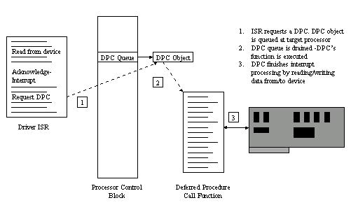

DPCs are a fundamental building block in NT's interrupt handling architecture. Interrupt servicing typically consists of two driver-provided components: an interrupt service routine (ISR) and a Deferred Procedure Call (DPC). ISR's execute at IRQL's above DISPATCH_LEVEL in the DIRQL range. Because one of NT's design goals is to spend as little time as possible at elevated IRQL, ISR's usually perform minimal interactions with their devices, normally just reading some state and getting the device to stop interrupting. The mechanism by which an ISR can finish processing at a lower IRQL is a DPC. Some time after an ISR requests a DPC, its DPC function will be called by NT at DISPATCH_LEVEL. While there are restrictions on what can be done at DISPATCH_LEVEL (e.g. touching pageable memory or blocking the thread), virtually nothing can be done from within an ISR. And of course, it is always possible to queue a worker thread work-item from a DPC so that interrupt processing can continue at PASSIVE_LEVEL.
While the NT DDK does a fairly good job of documenting DPCs and their use, there are some advanced DPC features that are not even mentioned. You might not find an immediate use for these features, but knowing that they are there can aid in your future driver designs. In this article I'm going to to describe how NT processes DPCs and document the exported NT functions that provide driver writers a finer degree of control over DPCs than the default APIs.
Deferred Procedure Calls are managed in NT by a DPC kernel objects (as opposed to Executive objects such as semaphores, events, file objects). There are two ways that DPCs can be used. If a device will only have one interrupt in progress at time, then the I/O Manager's DPC functions can be used. This course would be the one that would be a logical choice if you are using system IRP queuing.
Two functions are used when you rely on the I/O Manager's DPC management. The first, IoInitializeDpcRequest, initializes a DPC object and associates it with a particular device object. If you refer to the NT DDK kernel-mode function reference you'll see that it takes just two parameters: a device object and the address of a deferred procedure call function being registered. The DPC object that is initialized is the one that is contained in a device object.
When your ISR wants to request a DPC it calls the I/O Manager function, IoRequestDpc. This function takes a pointer to a device object, a pointer to an IRP, and a context parameter. At some later point the deferred procedure call that was registered for the device will be called and is passed the DPC object, a pointer to the device object, pointer to the IRP, and the context argument.
Underneath the I/O Manager functions described above are the Kernel functions that actually implement basic DPC functionality. A driver for a device that accepts multiple simultaneous I/O requests must use the Kernel functions directly, bypassing the I/O Manager convenience routines. There is a strong parallel between the two interfaces, however. Instead of calling IoInitializeDpcRequest, a driver's entry invokes the function KeInitializeDpc to initialize a DPC object. KeInitializeDpc takes a driver-allocated DPC object, a pointer to the deferred function and a context parameter that will be passed to the function. As with most driver-allocated data structures that are handed to the Kernel, the DPC object must be allocated from non-paged memory such as non-paged pool, driver static global non-paged memory, or in a device object extension.
Later, in an ISR, the driver calls KeInsertQueueDpc rather than IoRequestDpc. The parameter list for KeInsertQueueDpc is shorter than for IoRequestDpc - it takes a pointer to the DPC object initialized with KeInitializeDpc and two additional arguments that are simply passed through to the DPC routine. The DPC function receives a pointer to the DPC object, the context parameter that was passed to KeInitializeDpc, and the two system variables from KeInsertQueueDpc.
The I/O Manager's IoInitializeDpcRequest is actually nothing more than a wrapper around KeInitializeDpc.
#define IoInitializeDpcRequest( DeviceObject, DpcRoutine ) (\
KeInitializeDpc( &(DeviceObject)->Dpc, \
(PKDEFERRED_ROUTINE) (DpcRoutine), \
(DeviceObject) ) )
A device object has both a field for an IRP, which would be used for serially-oriented I/O devices, and a field for a DPC, which is the DPC object used in I/O Manager-DPC functions. Similarly, IoRequestDpc is a macro that calls KeInsertQueueDpc.
#define IoRequestDpc( DeviceObject, Irp, Context ) ( \
KeInsertQueueDpc( &(DeviceObject)->Dpc, (Irp), (Context) ) )
It obtains the DPC object pointer for the call from the device object.
typedef struct {
SHORT Type;
UCHAR Number;
UCHAR Importance;
LIST_ENTRY DpcListEntry;
PKDEFERRED_ROUTINE DeferredRoutine;
PVOID DeferredContext;
PVOID SystemArgument1;
PVOID SystemArgument2;
PULONG Lock;
} KDPC, *PKDPC;
The self-explantory fields are DeferredRoutine, DeferredContext, and SystemArgument1 and SystemArgument2. DeferredRoutine and DeferredContext are obtained from the parameters that are passed to KeInitializeDpc. The system arguments are set in the call to KeInsertQueueDpc. However, if the call to KeInsertQueueDpc was made through the IoRequestDpc macro then SystemArgument1 is taken from the IRP parameter and SystemArgument2 corresponds to the Context parameter.
The Type field is also pretty obvious. Each object, whether it is an Executive or Kernel object, is tagged with a type so that functions can ensure that they are handed objects of the type that they expect. The Kernel object type values are simply determined from an enumerated list that contains entries for APCs, Events, Processes, Queues, Semaphores, Timers, as well as DPCs.
The final four fields, Number, Importance, DpcListEntry and Lock are more obscure and are undocumented. I'll describe each of these in the following sections.
The NT DDK describes KeInsertQueueDpc as taking a DPC object and placing it in the DPC queue, and then issuing a software interrupt at DISPATCH_LEVEL which will cause the system to "drain" the DPC queue and execute the DPC functions. This is not entirely true. Rather than have one system-wide queue for DPC objects, NT maintains a separate DPC queue for each processor in a multiprocessor system. The queue's head is in the Processor Region Control Block (PRCB). Which queue does a DPC object get put on? One might guess that when a DPC is queued that it ends up on the DPC queue of the processor on which KeInsertQueueDpc is called. This is true for non-targetted DPCs. When DPCs are initialized with KeInitializeDpc the Number field is set to 0, which marks the DPC as non-targeted, that is, it will execute on the processor it is queued from. Figure 1 shows the typical flow of control for DPC queuing.
Figure 1. Interrupt Control Flow
DPCs can be targeted so that they will only be queued on a certain processor with the call KeSetTargetProcessorDpc. This function, although undocumented, is prototyped in NTDDK.H, and takes a pointer to the DPC object being targeted and the number of the processor it will be queued upon. KeInsertQueueDpc looks at the Number field, and if it is less than 32, treats the DPC as non-targeted. KeInitializeDpc sets the Number field to the number passed as a parameter plus 32. Thus, when KeInitializeDpc sets the Number field to 0, it is initializing a DPC object as non-targeted. Another way of describing a non-targeted DPC is to say that its targeted at the current CPU (the one on which the ISR executed), which also describes DPCs that are actually targeted, but happen to be aimed at the processor that the ISR ran on.
Before KeInsertQueueDpc places a DPC on DPC queue it first checks the Lock field. If this field is non-null it indicates that the DPC object already resides on one of the system's DPC queues. When this is the case KeInsertQueueDpc returns immediately with a FALSE result. If the Lock field is null, KeInsertQueueDpc links the DPC object onto the target processor's DPC queue through the DpcListEntry links in the DPC object. It then sets the Lock value to non-null and returns TRUE, informing the caller that the DPC has been freshly queued.
The NT DDK states that a DISPATCH_LEVEL software interrupt is issued. This is also known as a DPC queue-drain interrupt, but it is also used for invocations of the scheduler. Under most circumstances it is generated as the DDK asserts. However, there are instances where it is not, and this affects the timeliness of DPC processing. What determines whether or not a software interrupt is generated is the combination of the DPC's target processor and the DPC's importance. The Importance field in the DPC object reflects the DPC's importance, which can be High, Medium, or Low. KeInitializeDpc sets this value to Medium, so by default all DPCs are of medium importance. You can override this by calling KeSetImportanceDpc, another function that has its prototype in NTDDK.H, but that is undocumented. The values for High, Medium and Low are also in NTDDK.H (they are just an enumerated type). Before I describe how the importance affects when a DPC queue is drained, there is another effect priorities have on DPC queuing. DPCs that are of low or medium importance are placed at the end of the DPC queue they are targeted for, but high-importance DPCs are placed at the front of the queue!
The way that the combination of the target processor and the DPC importance affects queue draining is shown in Table 1. To summarize, when a high importance DPC is queued, a drain interrupt is generated regardless of whether the DPC is targeted or not targeted. Drain interrupts are generated upon the queuing of a medium importance DPC if the target processor is the current processor. If the target processor is a different processor, the target is sent a drain interrupt only if the number DPCs currently queued exceeds a global threshold. Low importance DPCs have the same drain-generating rule for DPCs that are remotely targeted as medium importance DPCs. Low importance DPCs that are targeted at the current processor cause a drain if the DPC queue length is above the threshold, or if the rate that DPCs have been queued on the processor is less than a global threshold.
| DPC Importance | Targeted at Current CPU or Non-Targeted | Targeted at Different CPU |
|---|---|---|
| Low | DPC queue length exceeds maximum DPC queue length or DPC request rate is less than minimum DPC request rate or System is idle | DPC queue length exceeds maximum DPC queue length or System is idle |
| Medium | Always | DPC queue length exceeds maximum DPC queue length or System is idle |
| High | Always | Always |
Table 1. Rules for Queue-Draining Interrupt Generation
The DDK states that the DPC queue is drained whenever the IRQL drops below DISPATCH_LEVEL. This is actually implemented as a call to an internal interrupt helper function. When an interrupt occurs, control is transferred into the interrupt object that is connected to the interrupt. The code in the interrupt object calls KiInterruptDispatch, which in-turn calls the ISR that is associated with the interrupt. When the ISR returns, KiInterruptDispatch calls the HAL function HalEndSystemInterrupt, which is responsible for dropping the IRQL back to its pre-interrupt level. If the IRQL is dropping below DISPATCH_LEVEL and a queue-drain interrupt is pending, then the HAL calls into KiDispatchInterrupt (note that this is a different function from KiInterruptDispatch). KiDispatchInterrupt is the Kernel's own internal ISR that handles DISPATCH_LEVEL software interrupts, and it executes DPC queue draining and context switches.
In addition, when a processor is idle it drains any DPCs that are in its queue. Which leads me to an interesting trivia point: the system idle thread executes at DISPATCH_LEVEL rather than at PASSIVE_LEVEL like other threads. Why? Because the idle thread's responsibility (other than to keep the processor doing something when there is no real work to do) is to drain the DPC queue in cases where a DPC object was queued to the processor, but no drain interrupt was generated (like when a low priority DPC is queued and neither drain condition held true). Since DPCs execute at DISPATCH_LEVEL the idle thread is simply set to DISPATCH_LEVEL execution, which means that it, rather than KiDispatchInterrupt, ends up draining the DPC queue even when a drain interrupt is generated. This is because HalEndSystemInterrupt will return the IRQL to its pre-interrupt level, which will be DISPATCH_LEVEL if the idle thread was running. Thus, KiDispatchInterrupt will not be called (since the IRQL is not dropping below DISPATCH_LEVEL) and the queue will be drained by the idle thread.
Remember that the default behavior of DPCs if you use them without targetting or setting their importance, is that they are of Medium importance and will not be targeted.
So how does the information on DPC queue drainage, DPC priorities and DPC targeting affect you as a driver writer? Like I said in the introduction, you may never have a need to call upon the advanced capabilities of DPCs. Only one driver shipped with NT, NDIS, uses DPC targeting and priorities. NDIS uses low importance DPCs that are targeted at a particular processor for its DPC processing.
Many devices require timely response by their interrupt handlers. So what benefit is there to using High-importance DPCs versus the default of Medium? Like most driver-related issues, it really depends on the other drivers that are in the system. However, on average there will be less latency between an ISR and a High-importance DPC than between an ISR and a Low-importance DPC.